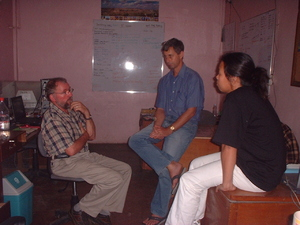

guhud 
/gugud/
v_rt.
“tell_story”
1.
n.
(guhuren, -en) story
Eng. story; account; report
OCM: Writing (212), Educational Theory and Methods (876)
Online dict status: -
Usage level: M
2.
v.
(egguhud, egpangguhuren, eg><ø-, eg><en-paN-) to tell
Eng. tell
Tag. magsabi
OCM: Non-electronic Transmission of Messages (202)
Online dict status: -
Usage level: M
3.
v.
(egpagugguhurey, eg><ø-pA><ey-rdpCVC-) to converse
Egpagugguhurey ki.
Syn. lalag
Eng. converse
Tag. makipág-úsap
Ceb. makigsulti
OCM: Non-electronic Transmission of Messages (202), Conversation (521)
Online dict status: -
Usage level: R
4.
v.
(egpagugguhurey, eg><ø-pA><ey-rdpCVC-) to tell stories to one another
Eng. tell stories to one another
Tag. pagkukuwentúhan
Ceb. nag-isturya
Ilo.: agistórya
OCM: Non-electronic Transmission of Messages (202), Conversation (521)
Online dict status: -
Usage level: R
5.
v.
for someone (egpangguhud, agent, eg><ø-paN-) to tell (egpangguhuren, eg><en-paN-)
Syn. egpanugtul
Eng. tell; story, to; report, to; inform; tattle
Tag. sabíhin; magsábi
Ceb. sultihi
OCM: Non-electronic Transmission of Messages (202)
Online dict status: -
Usage level: M
v.
(egpahuguhurey, eg><ø-pA><ey-rdpCV-) to story together
Eng. share stories
Online dict status: -
Usage level: R
Updated by: RJH,JLM,TME,RJH
Last updated: 21/Jan/2015
"pangguhud" in text "Proving Innocence I (When Accused of Theft)"
"egkahuhud" in text "Long Ago I"
"pangguhud" in text "Proving Innocence II (When Accused of Adultery)"
"pangguhud" in text "Death of a Young Man"
"igguhud" in text "Death of a Young Man"
"egkahuhud" in text "Morning Darkness"
"migpangguhud" in text "Morning Darkness"
"pigguhud" in text "Aurelio's Marriage"
"igpangguhud" in healthbook "Mania te keilangan neg lu-luan ta ka me belad ta?"
"Ipangguhud" in healthbook "Mania te keilangan neg lu-luan ta ka me belad ta?"
"igpangguhud" in healthbook "Mania te keilangan neg lu-luan ta ka me belad ta?"
"guhuren" in healthbook "Mania te keilangan neg lu-luan ta ka me belad ta?"
"immegguhurey" in healthbook "Nekey-a ka kahew?"
"Egguhud" in song "Eggale-gale ka langun"
"guhuren" in song "Panugtuli a ki Hisus"
"guhuren" in song "Panugtuli a ki Hisus"
This page last updated: 28-Dec-2019
Copyright © 2009-2014, Matigsalug Language Christian Association, Inc